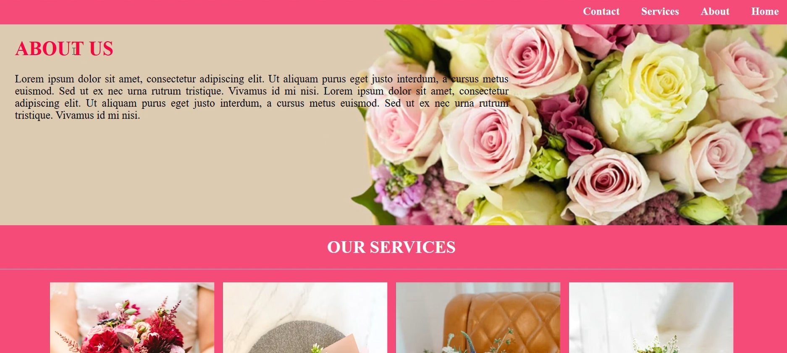
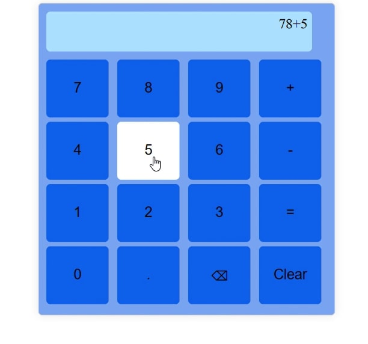

Developer | Designer | Innovator
I'm Kowshika, a 19-year-old developer with a passion for building intuitive and visually appealing web experiences. With a strong foundation in programming and a keen eye for design, I specialize in developing responsive websites and dynamic user interfaces. My technical toolkit includes HTML, CSS, JavaScript, and Node.js, and I’m constantly learning and expanding my skill set to stay ahead in the ever-evolving tech landscape. Whether it’s crafting a portfolio website or solving real-world challenges, I aim to deliver excellence in every project.

This project is a visually stunning and responsive landing page designed for a flower boutique, showcasing a harmonious blend of creativity and functionality. Developed using HTML, CSS, and JavaScript, the page is tailored to provide an immersive user experience.
This project showcases my ability to design and develop elegant, user-friendly websites with seamless functionality. It highlights my expertise in front-end web development and an eye for detail.
View Project
This project is a simple yet functional calculator built using HTML, CSS, and JavaScript. It provides essential arithmetic operations in an easy-to-use interface, showcasing clean design and interactive programming skills.
This project demonstrates my ability to create functional, interactive web applications while maintaining simplicity and usability. It highlights my foundational knowledge of front-end technologies and my problem-solving skills.
View ProjectGet in touch with me at kowshika223@gmail.com